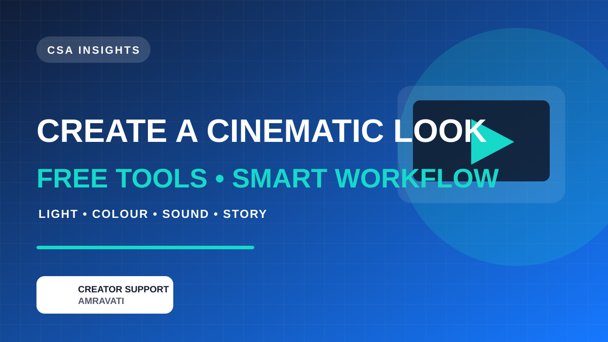

How to Plan Effective Video Ads in India: Structure, Creatives & Performance Guide
Running a video ad campaign can quickly drain budget if the creative is treated like a mini-movie or a generic brand reel. A good video ad has a clear, practical job: stop the right viewer in the first two to three seconds, show why the offer or solution matters, and make the next step effortless.
Whether you are producing video ads in-house or working with a creative agency in India, strong campaign results start before the camera rolls. Here is a structured guide to planning, editing, and evaluating video advertisements that communicate clearly without wasting ad spend.
1. Align the Ad Format With Your Campaign Objective
Different campaign goals require different ad pacing, depth, and calls-to-action. Trying to pack brand storytelling, five product features, a discount offer, and a lengthy explanation into one short ad usually leaves viewers confused. Define one primary action for each creative.
| Campaign Goal | Primary Job of the Video | What to Emphasize |
|---|---|---|
| Brand Awareness / Launch | Build familiarity and memorable positioning | Clear visual identity, relatable situation and simple core message |
| Product / Service Consideration | Show how it works and answer key buyer doubts | Real demonstration, practical benefits and genuine proof |
| Direct Response / Lead Gen | Prompt an inquiry, call, visit or sign-up | Relevant problem/offer hook, clear value and unmistakable next step |
For example, a brand-awareness ad may introduce a business and its point of difference, while a lead-generation ad should make the service, offer, eligibility and enquiry route obvious. Choose the objective first; then decide the format and length.
2. Build Around a Clear Three-Part Ad Structure
Most effective video ads follow a simple narrative arc rather than relying on heavy effects:
- The Opening Hook (First 2–3 Seconds): Start with a recognisable customer problem, a visual result, a direct question or an honest statement of value. Avoid slow intros or long logo animations at the beginning.
- The Middle Proof & Explanation: Demonstrate the product in use, walk through a process, show a relevant result or share concise customer feedback that supports the claim. Use specific, verifiable information rather than exaggerated promises.
- The Closing Call-to-Action (CTA): Tell the viewer clearly what to do next—send a message, book a consultation, visit a page or request details. Make sure the destination page or chat flow matches the promise made in the ad.
Silent-Viewer Rule: Many people scroll feeds with sound off or in noisy surroundings. Make the story understandable on mute. Use accurate captions, readable type, strong contrast and clear product visuals. Keep essential text away from platform interface buttons and avoid placing too many words on screen at once. Check the ad on a phone at normal viewing size before publishing.
3. Plan Variations Early Instead of Relying on One Hero Cut
Paid campaigns can lose effectiveness when the same audience repeatedly sees the same opening and edit. Planning variations during scripting and shooting is more efficient than trying to create every alternative after the campaign begins.
- Test Different Hooks: Keep the core offer and main proof consistent while testing two or three different opening lines or visual hooks. Change one major variable at a time where possible so the result is easier to interpret.
- Adapt Aspect Ratios & Lengths: Prepare clean
9:16vertical versions for mobile-first placements alongside16:9or square/4:5 assets where needed. Check framing, captions and safe areas separately for each placement instead of simply cropping the master. - Capture Extra Cutaways: Film product close-ups, hands-on demonstrations, staff/customer interactions and useful B-roll on shoot day. These give the editor options to refresh pacing or swap visuals without changing the core message.
- Keep a Test Log: Record the audience, placement, creative version, launch date, spend and primary result. This makes it easier to compare like with like and avoid drawing conclusions from small or uneven samples.
4. Recognise Creative Fatigue and Refresh With a Reason
Creative fatigue can occur when an audience has seen an ad repeatedly and its ability to attract attention or prompt action begins to weaken. Do not diagnose fatigue from one metric or a single poor day. Compare performance over a suitable period and check whether the audience, budget, placement or offer also changed.
- Watch Frequency Alongside Response: Rising frequency combined with a sustained decline in click-through rate, video hold or conversion rate can be a warning sign, especially when spend and audience conditions are broadly comparable.
- Review the Funnel: If people still watch but stop clicking, the offer or CTA may need work. If clicks remain steady but enquiries fall, inspect the landing page, form, pricing clarity and follow-up process before replacing the video.
- Refresh One Element at a Time: Try a new opening, demonstration, customer question, proof point or cutdown. Keep the parts that are working and document what changed.
5. Align the Landing Page and Offer With the Ad
The ad is only the first part of the customer journey. A viewer who clicks an ad for a specific service should land on a page that explains that same service, repeats the relevant offer and provides the promised next step. A mismatch between the video and destination can waste otherwise useful traffic.
- Use the same product/service name, offer terms and key message in the ad and on the destination page.
- Make the next action easy to find on mobile—such as a short enquiry form, call option or WhatsApp contact where appropriate.
- Show relevant details, eligibility, pricing context or limitations clearly. Do not hide important conditions behind vague claims.
- Check page loading, mobile layout, form functionality and confirmation messages before increasing campaign spend.
- Track meaningful outcomes with appropriate analytics and campaign tags, while respecting consent and applicable privacy requirements.
6. What to Confirm With a Creative or Editing Partner
If you hire an agency or editor to produce ad creatives, align on practical scope details upfront so creative production and ad buying do not get mixed up:
- Production vs. Media Management: Clarify whether the partner is creating video assets, managing ad accounts, targeting and budgets, or providing both services.
- Deliverables & Licensing: Confirm exact aspect ratios, durations, subtitle formats, source/raw file terms, and music or stock licensing so there are no usage surprises once ads go live.
- Review & Revision Boundaries: Agree on draft timelines, feedback windows and included revision rounds. Double-check pricing, disclaimers, spelling, contact details and offer validity before launch.
- Measurement Handover: Decide which creative names, campaign tags and reporting metrics will be used so the production team and campaign manager can identify each version accurately.
7. Measure What Matters After Launch
Views and impressions alone do not tell you if an ad is helping your business. Evaluate performance based on what the campaign is actually trying to achieve:
- Early Attention & Hold: Review 3-second views or comparable opening-retention signals and average watch time to understand whether viewers stop and stay beyond the opening.
- Engagement & Click Quality: Consider click-through rate alongside the relevance of the traffic and what visitors do after arriving on the website or contact channel.
- Lead or Sales Quality: Track qualified enquiries, completed forms, calls, bookings or purchases—not just low-cost clicks. Include follow-up outcomes where your process allows.
- Iterate With Discipline: Results depend on the offer, audience, placement, landing page, budget and creative working together. Diagnose the likely weak point before launching the next test.
Additional practical questions
How long should a business video ad be?
There is no single magic length. Short 15- to 30-second cuts can work for quick hooks, offers and remarketing, while 45- to 90-second videos may suit a product, service or process that needs more explanation and proof. Let the message and placement determine the duration.
Can existing footage or clips be turned into a video ad?
Often yes. If you already have clear product shots, customer clips or brand footage with usable audio and appropriate permissions, an editor can assess whether the material supports the intended message. Additional footage may be needed if important proof or product details are missing.
Why do some good-looking videos get low conversions as ads?
A polished video can underperform if the opening feels slow, the offer is unclear, the proof is weak, the CTA is hard to follow or the landing page and follow-up experience do not match the ad. Review the complete customer journey before blaming the edit alone.
How can I tell whether an ad is becoming fatigued?
Look for a sustained decline in attention, click or conversion signals alongside rising frequency, while checking for changes in audience, placement, budget and offer. Refresh a specific creative element and compare results fairly rather than making a decision from one isolated metric.
Key Takeaway
Effective video advertising comes down to clarity, relevance and structured testing rather than flashy gimmicks. Match your ad to a clear objective, lead with a strong hook and genuine proof, design for silent mobile viewing, align the destination page with the offer and refine creative using meaningful campaign data.
If you are planning video ads, promotional shoots or video editing in Amravati—or coordinating remote post-production—explore our video editing services and creative services, or contact Creator Support Amravati to discuss your campaign needs.
Plan Your Next Video Ad Creative
Share your campaign objective, target audience, offer, placements and available footage. A clear brief helps define the creative structure, required versions and review process before production starts.
Build a creative testing plan
Start with a clear campaign objective and one audience problem. Develop a small set of creative variations that test meaningful differences—such as the opening message, demonstration, proof point or call to action. Keep the offer and landing-page experience consistent enough to interpret results. Avoid changing too many elements at once.
Measure lead quality after the click
Track landing-page actions, form completion, calls, qualified enquiries and downstream outcomes where the business can measure them. A low cost per click does not necessarily mean a campaign is producing useful leads. Ensure conversion events are configured correctly and respect privacy and consent requirements.
Frequently asked questions
Can a video ad agency guarantee sales?
No responsible provider can guarantee sales from creative production alone. Results depend on offer, audience, budget, landing page, sales follow-up and market conditions.
How many ad versions should I create?
Start with a manageable number of meaningful variations based on budget and the platform's testing capabilities. Review performance before producing many near-identical edits.
Should the same video run on every platform?
One shoot can support multiple versions, but aspect ratio, pacing, captions, safe areas and calls to action should be adapted to each placement.